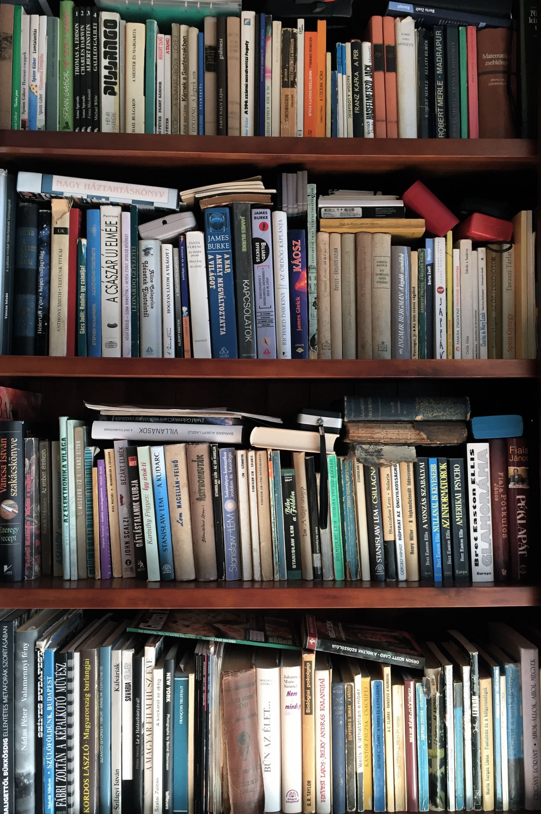

📚 Books / könyvek 2017
 |
[books / könyvek]
#listák
#awesome
|
[books / könyvek]
#listák
#awesome
Ezen az oldalon azt tervezem, hogy összeszedem az általam kedvelt (e vagy papír alapú) könyveket. Jelenleg ezeket olvasom/tam mostanában.
-

Popper Péter: Felnőtnek lenni
- Rady playe One
Weir, Andy: Artemis- Taylor, Dennis E. - MI, Bob
- Cline, Ernest - Ready Player One
- Parti Nagy Lajos: Fülkefor és vidéke, Fülkefória és vidéke (II)
- Moldova György: Keserű Pohár I-III.
Harari, Yuval Noah: Sapiens - Az emberiség rövid története és Homo Deus - A holnap rövid története- Kellerman, Faye: Szemfényvesztés
Brown, Pierce: Vörös lázadás, Arany Háború- Zoltán Gábor: Orgia
- Bolano(Bolaño), Roberto: 2666
- Szabó T. Anna: Törésteszt
- Chiang, Ted: Életed törtenete
Elsberg, Marc: Blackout- Eggers, Dave: A Kör
Berta Zsolt: Recept novelláskötet- Kelly, Scott: Endurance (angol)
Scalzi, John: Az összeomló birodalomFöldes András: Erőss Zsolt - A Himalájánál magasabbraShafak(Şafak), Elif: BecsületEbershoff, David: A dán lányCrouch, Blake: Sötét anyagÁrpa Attila: HoltomiglanVance, Ashlee: Elon Musk - Tesla, SpaceX és a fantasztikus jövőHertzfeld, Andy: Revolution in The Valley: The Insanely Great Story of How the Mac Was Made (angol)Merchant, Brian: The One Device: The Secret History of the iPhone (angol)Hosseini, Khaled: Papírsárkányok- Radnóti Miklósné Gyarmati Fanni: Napló 1935-1946 I-II.
Frei Tamás: A Bankár, A Megmentő, Agrárbárók, 2015: A káosz éve és a magyar elit háborújaMoldova György: Titkos ZáradékEnders, Giulie: BélügyekCsabai László: Szindbád szibériábanLeslie L. Lawrence: Sindzse szemeM. R. Carey: KiéhezettekMoldova György: A végtelen vonalHosszú Katinka: A magyar Iron LadyBlake Crouch: Wayward Pines trilógiados Santos, José Rodrigues: A hetedik pecsét - A világvége elkezdődött, Isten haragja- Howey, Hugh: A siló
Banks, Iain M.: A játékmesterCussler, Clive: A jéghegyChase, James Hadley: A gyilkos hajszaCronin, Justin: A szabadulásKolozsi László: Ki köpött a krémesbe, Mi van a reverenda alatt?VanderMeer, Jeff: ExpedícióVermes, Timur: Nezd ki van itt!- Kent, Steven: The Ultimate History of Video Games
Amit el kellene olvasni még:
- Joyce, James: Ulysses
És akkor jöjjön az én könyv toplistám

teszt szöveg és egy link: szoveg index és még egy kis szöveg

teszt szöveg és egy link: szoveg index és még egy kis szöveg

teszt szöveg és egy link: szoveg index és még egy kis szöveg

teszt szöveg és egy link: szoveg index és még egy kis szöveg
teszt szöveg és egy link: szoveg index és még egy kis szöveg
teszt szöveg és egy link: szoveg index és még egy kis szöveg
Harari, Yuval Noah: Sapiens - Az emberiség rövid története és Homo Deus - A holnap rövid története
“A tűz tett minket veszedelmessé. A pletyka együttműködővé. A mezőgazdaság még éhesebbé. A mitológia tartotta fenn a törvényt és a rendet. A pénz adott valamit, amiben mind bízhatunk. Az ellentmondások teremtették meg a kultúrát. A tudomány tett minket a teremtés urává. De egyik sem tett boldoggá…
A világhírű jeruzsálemi egyetemi tanár szerint így foglalható össze annak története, ahogyan jelentéktelen majmokból a világ uraivá váltunk.”
- Harris, Thomas: A Vörös Sárkány (Rakéta regényújság 129., 1986, 24-33. szám)
- Merle, Robert: Mesterségem a halál Levin, Ira: A brazíliai fiúk (Rakéta regényújság 137., 1987, 20-26. szám)
- Shafak(Şafak), Elif: Szerelem
- Szabó Magda: Für Elise, Ajtó, Az őz, Abigél
- Simmel, Johannes Mario: Nem kell mindig kaviár